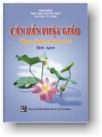

|
BuddhaSasana Home Page |
Vietnamese, with Unicode Times font |
|  |
C ăn Bản Phật GiáoBình Anson NXB Tổng Hợp TP HCM |
|
-01- Tóm Tắt Căn Bản Phật Giáo Tỳ-khưu Dhammika ---*--- Lược dịch từ bài "Basic Buddhism: A Five-Minute Introduction" (Căn bản Phật giáo: Giới thiệu trong năm phút), trong quyển "Good Question, Good Answer" (Khéo Vấn, Khéo Đáp) của Bhikkhu Dhammika, ấn bản Internet (http://www.buddhanet.net). * Hỏi: Phật Giáo là gì? Đáp: Phật Giáo là một tôn giáo có khoảng 300 triệu tín đồ trên khắp thế giới. Danh từ Phật Giáo (Buddhism) phát nguồn từ chữ "buddhi", có nghĩa "giác ngộ", "thức tỉnh". Phật Giáo khởi nguồn từ hơn 2,500 năm trước, khi Ngài Siddhattha Gotama (Sĩ-đạt-ta Cồ-đàm), hay Đức Phật, tự mình giác ngộ vào lúc 35 tuổi.Hỏi: Có phải Phật Giáo chỉ thuần là một tôn giáo? Đáp: Đối với nhiều người, Phật Giáo không phải chỉ là một tôn giáo mà còn có thể xem như là một triết học, hay đúng hơn, đó là "một lối sống". Gọi Phật Giáo là một triết học, vì danh từ "triết học - philosophy" có nghĩa là "sự yêu chuộng trí tuệ", và con đường của đạo Phật có thể tóm tắt như sau:(1) sống có đạo đức, Hỏi: Phật Giáo giúp tôi bằng cách nào? Đáp: Phật Giáo giải thích mục đích của đời sống, giải thích hiện tượng bất công và bất bình đẳng trên thế gian, và đưa ra một phương cách thực hành hay một lối sống để đưa đến hạnh phúc thật sự.Hỏi: Tại sao Phật Giáo trở nên phổ biến? Đáp: Phật Giáo ngày càng phổ biến ở các nước Tây phương vì nhiều lý do. Thứ nhất là vì Phật Giáo có những giải đáp cho nhiều vấn đề trong các xã hội vật chất hiện đại. Tiếp đến, cho những ai có chú tâm, Phật Giáo đem lại một sự thông hiểu sâu sắc về tâm trí con người và các cách trị liệu tự nhiên, mà các nhà tâm lý nổi tiếng trên thế giới đều công nhận là rất cao cấp và rất hiệu quả.Hỏi: Đức Phật là ai? Đáp: Ngài Siddhattha Gotama sinh ra vào năm 563 trước Tây Lịch, trong một hoàng tộc tại Lumbini, nay thuộc xứ Nepal. Vào năm 29 tuổi, Ngài nhận thức rằng tiện nghi vật chất và an ninh trong thế gian không bảo đảm hạnh phúc; vì thế, Ngài đi tìm hiểu các học thuyết, tôn giáo và triết học thời đó, để tìm kiếm chìa khóa đưa đến hạnh phúc. Sau sáu năm học tập và hành thiền, Ngài tìm ra con đường "Trung Đạo" và giác ngộ. Sau khi chứng đắc, Ngài dùng quãng đời còn lại tại thế gian để truyền giảng các nguyên lý trong đạo Phật -- gọi là Pháp, hay Chân lý, cho đến khi Ngài nhập diệt vào năm 80 tuổi.Hỏi: Có phải Đức Phật là Thượng Đế? Đáp: Không, Ngài không là Thượng Đế, và Ngài cũng không tuyên bố như thế. Ngài là người chỉ dẫn con đường đưa đến giác ngộ, từ kinh nghiệm thực chứng của Ngài.Hỏi: Phật tử có tôn thờ các thần tượng không? Đáp: Những người Phật tử tỏ lòng tôn kính các hình ảnh của Đức Phật, nhưng không tôn thờ, cũng không van xin những điều lợi lạc. Một pho tượng Phật ngồi trong tư thế với hai tay dịu dàng đặt trên vế, với nụ cười từ bi, nhắc nhở chúng ta nỗ lực phát triển tình thương và an định nội tâm. Lễ lạy tượng Phật là để tỏ lòng biết ơn về các lời dạy của Ngài.Hỏi: Tại sao nhiều quốc gia Phật Giáo lại nghèo như vậy? Đáp: Không hẳn đúng như vậy. Nhật Bản là một quốc gia có truyền thống Phật Giáo sâu đậm và ngày nay cũng là một quốc gia có kinh tế giàu mạnh. Thái Lan, với Phật giáo là quốc giáo, cũng có một nền kinh tế tương đối vững mạnh và phát triển. Tuy nhiên, chúng ta cần biết rằng một trong các điều dạy của Phật Giáo là tài sản của cải không bảo đảm được hạnh phúc, và tài sản của cải cũng không bao giờ thường còn. Dân chúng trong bất kỳ quốc gia nào cũng chịu đau khổ, cho dù họ giàu sang hay nghèo nàn. Chỉ những người nào thông hiểu các lời dạy của Đức Phật thì mới có thể tìm được hạnh phúc thật sự.Hỏi: Có phải có nhiều tông phái Phật Giáo không? Đáp: Có nhiều tông phái trong Phật Giáo là vì có những khác biệt về văn hóa và truyền thống lịch sử của mỗi quốc gia. Tuy nhiên, căn bản của Phật Giáo vẫn không thay đổi, đó là Pháp hay Chân lý.Hỏi: Có phải các tôn giáo khác đều sai lầm? Đáp: Phật Giáo là một hệ thống tín ngưỡng có tính bao dung đối với các tín ngưỡng hay tôn giáo khác. Phật Giáo chấp nhận các lời giảng đạo đức của các tôn giáo khác, nhưng Phật Giáo còn tiến xa hơn, bằng cách đưa ra một mục tiêu dài hạn trong sự hiện hữu của chúng ta, qua trí tuệ và sự hiểu biết thật sự. Phật Giáo chân chính thì rất bao dung, và không quan tâm đến các nhãn hiệu như là "tín hữu Ky-tô giáo", "tín hữu Hồi giáo", "tín hữu Ấn-độ giáo", hay "Phật tử". Vì vậy, trong lịch sử, không bao giờ có các cuộc thánh chiến mang danh Phật Giáo. Cũng vì thế mà những người Phật tử không đi truyền giảng hay cải đạo người khác; họ chỉ giảng giải nếu được ai hỏi đến.Hỏi: Phật Giáo có tính khoa học không? Đáp: Khoa học là tri thức được kết hợp thành hệ thống, qua các dữ kiện được quan sát và thực nghiệm và đề ra các định luật tổng quát của thiên nhiên. Cốt lõi của Phật Giáo phù hợp với định nghĩa đó, bởi vì Tứ Diệu Đế hay Bốn Sự Thật Thâm Diệu, có thể được thử nghiệm và minh chứng bởi bất kỳ người nào, và ngay chính Đức Phật cũng đã từng nói với các đệ tử rằng họ phải thực chứng các lời dạy của Ngài, mà không nên chỉ tin suông. Phật Giáo dựa nhiều trên trí tuệ, hơn là lòng tin.Hỏi: Đức Phật đã dạy những gì? Đáp: Đức Phật đã giảng dạy rất nhiều đề tài, nhưng các điều căn bản trong Phật Giáo có thể tóm tắt trong Tứ Diệu Đế và Bát Chánh Đạo.Hỏi: Diệu đế thứ nhất là gì? Đáp: Khổ Đế, chân lý thâm diệu đầu tiên, nói rằng đời sống là đau khổ, nghĩa là phải chịu đau đớn thể xác, già nua, bệnh hoạn, rồi chết. Ta cũng phải chịu đau khổ về mặt tâm lý như cô đơn, phiền giận, bực bội, sợ hãi, bối rối, thất vọng, hay sân hận. Đây là một sự kiện hiển nhiên, không thể chối cãi. Đây là thực tế khách quan, không phải bi quan; vì bi quan là mong đợi những điều gì trở nên tệ hại. Mặt khác, Phật Giáo đề ra cách thức giải quyết các đau khổ đó và cách thức để có hạnh phúc thật sự.Hỏi: Diệu đế thứ nhì là gì? Đáp: Tập Đế, chân lý thâm diệu thứ nhì, dạy rằng tất cả mọi đau khổ đều do ái dục và chấp thủ. Ta sẽ bị phiền khổ nếu ta mong đợi người khác phải tuân theo ý muốn của mình, phải làm giống như mình, nếu ta không được những gì mình muốn, v.v. Ngay cả khi ta muốn và được, điều này cũng không bảo đảm có hạnh phúc. Tâm khát khao ham muốn cướp đoạt của ta niềm vui được thỏa lòng và hạnh phúc. Thay vì kiên trì chiến đấu để thành đạt điều mong muốn, hãy cố gắng sửa đổi chính cái lòng ước muốn của mình.Hỏi: Diệu đế thứ ba là gì? Đáp: Diệt Đế, chân lý thâm diệu thứ ba, là có thể chấm dứt đau khổ và đạt được trạng thái thỏa lòng và hạnh phúc. Khi ta dứt bỏ ái dục, vốn là vô ích, và tập sống từng ngày, chúng ta bắt đầu sống an vui và tự do. Chúng ta sẽ có nhiều thì giờ và năng lực để giúp đỡ người khác. Trạng thái ấy được gọi là Niết Bàn.Hỏi: Diệu đế thứ tư là gì? Đáp: Đạo Đế, chân lý thâm diệu thứ tư, là con đường đưa đến chấm dứt đau khổ. Con đường này gọi là Bát Chánh Ðạo.Hỏi: Bát Chánh Đạo là gì? Đáp: Đó là con đường gồm 8 yếu tố chân chánh: Chánh Kiến, Chánh Tư Duy, Chánh Ngữ, Chánh Nghiệp, Chánh Mạng, Chánh Tinh Tấn, Chánh Niệm, và Chánh Định. Đây là con đường của đạo đức và tỉnh thức -- qua lời nói, ý nghĩ và hành động, và phát triển trí tuệ bằng sự nhận thức rõ ràng về Tứ Diệu Đế và bằng sự tăng trưởng lòng từ bi.Hỏi: Ngũ giới là gì? Đáp: Đây là năm điều giới luật đạo đức của Phật Giáo. Đó là: không sát hại, không lấy của không cho, không tà dâm, không nói dối, và không dùng các chất say làm lu mờ trí óc.Hỏi: Nghiệp là gì? Đáp: Nghiệp hay "nghiệp-quả" là một định luật cho biết rằng mỗi một nguyên nhân đều tạo ra một hậu quả, có nghĩa là các hành động của ta đều có những hậu quả. Định luật đơn giản này đã giải thích nhiều vấn đề: sự bất công trên thế gian, tại sao có người sinh ra lại có phế tật, có người lại có nhiều tài năng, có người có đời sống rất ngắn ngủi. Nghiệp cho thấy tầm quan trọng về việc tất cả chúng ta phải chịu trách nhiệm về các hành động của chính mình, trong quá khứ và hiện tại. Làm thế nào để thử nghiệm tác động nghiệp quả của các hành động của ta? Câu trả lời được tóm tắt bằng cách hãy nhìn xem 3 điểm chính: (1) ý định đằng sau của mỗi hành động, (2) hậu quả của hành động đó vào chính mình, và (3) hậu quả của hành động đó vào những người khác.Hỏi: Trí tuệ là gì? Đáp: Trong Phật Giáo, Trí tuệ phải được phát triển cùng với Từ bi. Trong một cực đoan, bạn có thể là một người tốt bụng nhưng khờ dại, và trong một cực đoan khác, bạn có thể có nhiều kiến thức nhưng lại không có tình cảm. Phật Giáo dạy ta nên giữ thật sự cân bằng và trọn vẹn cả hai, phải trau giồi cả trí tuệ lẫn từ bi. Trí tuệ cao nhất là thấy rõ ràng rằng trên thực tế, mọi hiện tượng đều không hoàn toàn, không thường còn, và không có một thực thể cố định. Trí tuệ thật sự không phải chỉ tin vào những gì được dạy, mà phải chứng nghiệm và thông hiểu chân lý và thực tế. Trí tuệ đòi hỏi phải có một tâm ý rộng mở, khách quan, không cố chấp. Con đường của Phật Giáo đòi hỏi phải can đảm, nhẫn nại, mềm dẻo và thông minh.Hỏi: Từ bi là gì? Đáp: Từ bi bao gồm các phẩm hạnh của lòng san sẻ, sẵn sàng an ủi người khác, thiện cảm, chăm lo và quan tâm. Trong Phật Giáo, ta chỉ thật sự cảm thông người khác khi nào ta thật sự cảm thông chính mình, qua trí tuệ.Hỏi: Tôi phải làm thế nào để trở thành một Phật tử? Đáp: Bất cứ ai cũng có thể tìm hiểu và thực nghiệm các lời dạy của Đức Phật. Ngài dạy rằng lời giải đáp cho mọi vấn đề của chúng ta là ở bên trong chúng ta, không phải ở bên ngoài. Ngài nói với các đệ tử không được tin ngay vào lời dạy của Ngài, mà họ phải tự thử nghiệm các lời dạy đó. Như thế, mỗi người tự có quyết định và tự chịu trách nhiệm về các hành động và sự hiểu biết của mình. Điều này cho thấy Phật Giáo không phải là một tập hợp cố định các tín điều cần phải được chấp nhận trọn vẹn. Đây là những lời dạy để mỗi người tự tìm hiểu, học tập và áp dụng theo tình huống riêng của mình.Perth, Tây Úc, tháng 8-2004 -ooOoo- Ðầu trang | 01 | 02 | 03 | 04 | 05 | 06 | 07 | 08 | 09 | 10 | Mục lục |
[Trở
về trang Thư Mục]
last updated: 14-03-2005